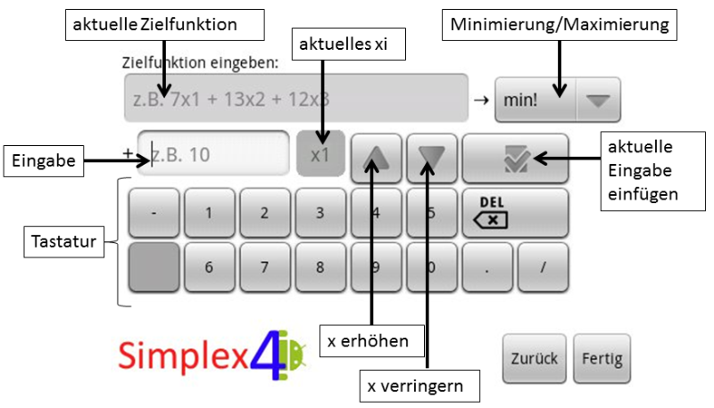
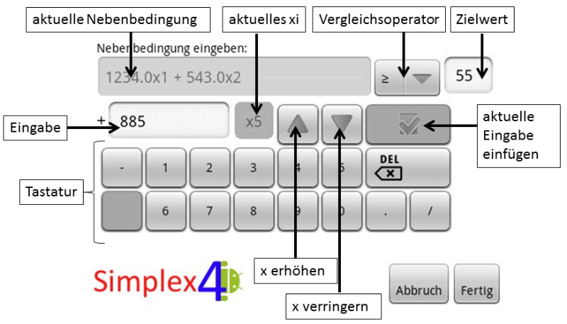
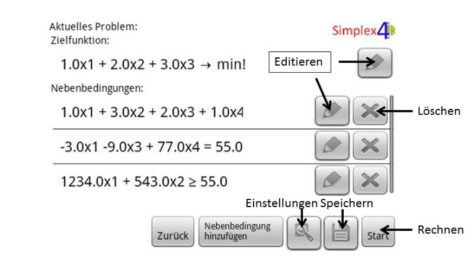

Benutzerhandbuch - Brainstorming
● Anforderungen aus den MAC-Folien
○ Systemanforderungen: Android 2.1, HDPI Bildschirm
○ Bedienung des Programms
● besonders gut zum Schummeln in Klausuren, oder auch als Prof, wenn man keine Ahnung hat und peinliche Situationen an der Tafel vermeiden will/dabei gleichzeitig "HIP" sein möchte
● Erläuterung aller Views und der darin enthaltenen Buttons
● Zeigen des Ablaufs für übliche Aktionen (Problem anlegen, anzeigen, rechnen, laden, speichern)
● bei der Ausgabe Rundung auf 2 Nackommastellen
● Aufbereiten von Screenhots inkl. Pfeile zur Beschriftung
Punkte auf den Folien
Systemanforderungen
Bedienung des Programms
Gliederung:
Einleitung
Installation
Hard und Softwarevorraussetzungen
Setup, wie installiere ich
Benutzung
Startbildschirm
neues Problem
Verwaltung eines Problems
1. Einleitung:
Wir beglückwünschen Sie, dass Sie sich für Simplex4Android, das spielend leichte Programm zur Berechnung von Simplex-Problemen des Alltags, entschieden haben. Entdecken Sie Simplex4Android als Student während Ihres Studiums oder als Lehrkraft an der Universität und meistern Sie jede Situation souverän. Sei es in der Vorlesung selbst oder heimlich in einer Klausur. Sie werden es zu schätzen wissen, dass Sie Simplex4Android bei jedem Tableau detailliert unterstützt und alle Zwischenschritte des Zweiphasensimplex in der primalen oder dualen Variante sowie die Lösung aufzeigt. Blamieren an der Tafel ist seit heute ausgeschlossen und nutzen Sie ihr Handy als Presenter, wird niemand Simplex4Android bemerken.
2. Installation
● Systemvorraussetzungen:
Android Version 2.1 (Eclair) oder höher, HDPI Bildschirm
● Installationshinweise
Installation von simplex4android.apk mithilfe der Android Debug Bridge mit dem Befehl: “adb install <path_to_apk>”
In Kürze wird Simplex4Android im Android Market verfügbar sein.
3. Benutzunghinweise
● Startbildschirm
Aktuelles Problem | Zugriff auf aktuelles Problem |
Neues Problem | neues Problem anlegen |
Problem laden | gespeichertes Problem laden |
Tutorial/Dokumention | Zugriff auf dieses Tutorial :-) |
● Zielfunktion eingeben

aktuelle Zielfunktion | Aktueller Stand der Zielfunktion, wie er beim Betätigen von “Fertig” gespeichert würde. |
Minimierung/Maximierung | Auswahl von “min!” oder “max!” |
(siehe “Nebenbedingung eingeben”)
● Nebenbedingung eingeben

aktuelle Nebenbedingung | Aktueller Stand der Nebenbedingung, wie er beim Betätigen von “Fertig” gespeichert würde. |
Vergleichsoperator | “<=”, “=” oder “>=” wählen |
Zielwert | Zielwert der Nebenbedingung |
Eingabe | Aktueller Stand des gewählten xi, wie er beim Betätigen von “aktuelle Eingabe einfügen” in die Nebenbedingung übernommen würde. |
aktuelles xi | xi, das in “Eingabe” bearbeitet werden und anschließend mit “aktuelle Eingabe einfügen” übernommen werden kann. |
x erhöhen | erhöht das “aktuelle xi” |
x verringern | verringert das “aktuelle xi” |
aktuelle Eingabe einfügen | fügt “Eingabe” für “aktuelles xi” hinzu |
Tastatur | Tastenfeld zum Berarbeiten von “Eingabe” |
Abbruch | Editieren abbrechen |
Fertig | Editieren mit aktuellem Stand in “aktuelle Nebenbedingung” abschließen. |
● Aktuelles Problem

Editieren | gewählte Zielfunktion bzw. Nebenbedingung editieren |
Löschen | Nebenbedingung löschen |
Zurück | zurück zum Startbildschirm |
Nebenbedingung hinzufügen | weitere Nebenbedingung einfügen |
Einstellungen | wählen zwischen “dual” oder “primal” |
Speichern | aktuelles Problem (über-)speichern |
Rechnen | aktuelles Problem rechnen |
● Gespeicherte Probleme

Editieren | gewählte Zielfunktion bzw. Nebenbedingung editieren |
Löschen | Nebenbedingung löschen |
Zurück | zurück zum Startbildschirm |
Neues Problem | neues Problem anlegen |